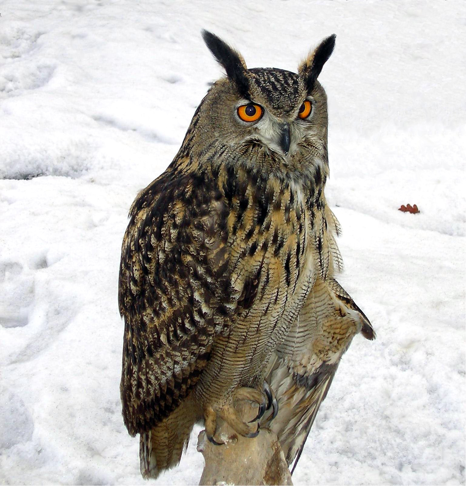
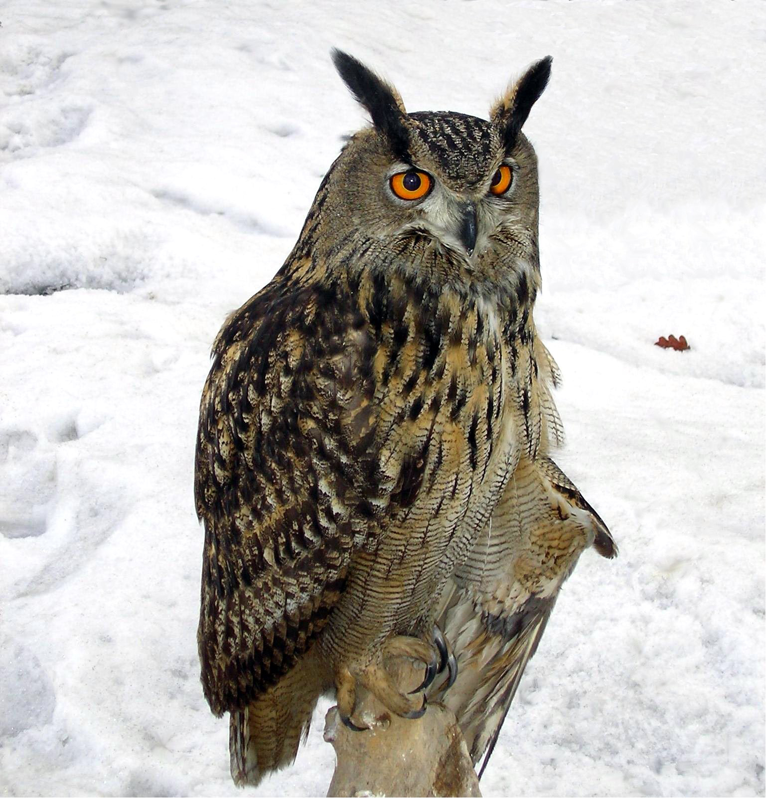

Velociraptor
The velociraptor is a genus of dromaeosaurid theropod dinosaur that lived during the later part of the Cretaceous Period, about 75 to 71 million years ago. Velociraptors were around the size of a turkey, and were covered in feathers.
The Land Snail
The Land snail is just like a tiny human that happens to look like a disembodied tongue.
Bats
Bats are the only flying mammal in existence. They are nocturnal, and see using echolocation. They can live for over 20 years, but be careful because they can carry rabies.
Eagle Owl
The eagle owl is one of the largest living species of owl, and it lives in mountainous regions throughout Europe and Asia. They are nocturnal predators and will usually hunt for small mammals, but they will settle for other small creatures. They also have some hollow bones!.
(owls are also the coolest animal)